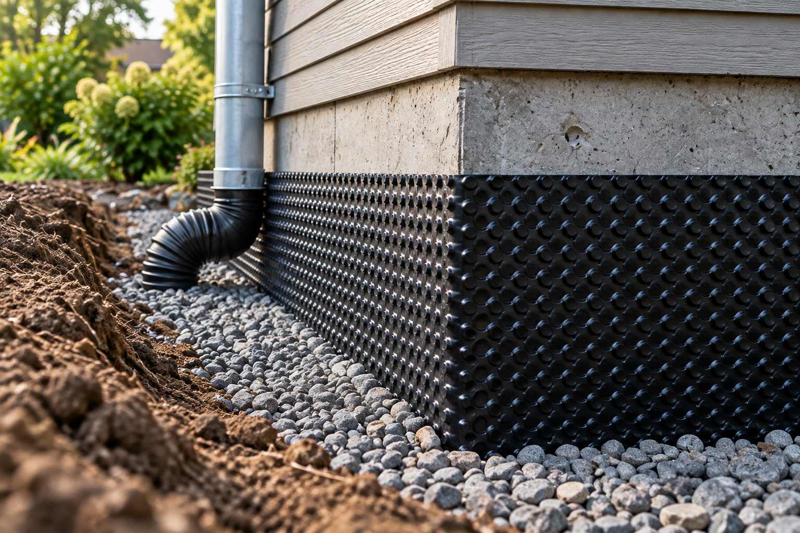
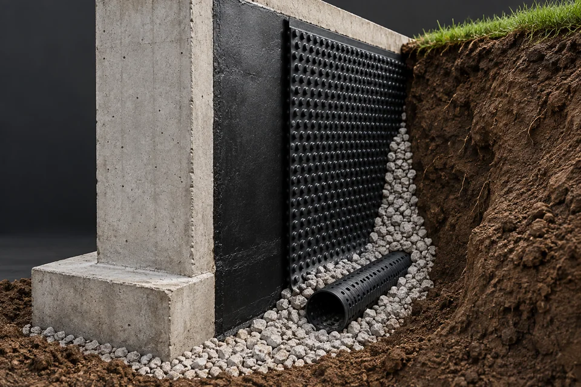

Assess the site
Discuss the affected side of the house, utilities, access for equipment and nearby patios, planting or boundaries.
Protection at the foundation
Explore options around the outside of your foundation.
Discuss your projectIndependent providers. Availability varies by location.

Exterior waterproofing discussions may involve the outside foundation surface, surrounding drainage and access to the work area. The relevant scope depends on the building and the provider’s assessment.
Describe where water appears indoors and what you notice outside after rain, if you can observe it safely. A provider can explain whether exterior work is appropriate and what access or permissions may be needed.
A closer look
Exterior water management brings the foundation surface, drainage layer and water outlet into one conversation. The aim is to manage moisture before it reaches the inside face of the wall.

A waterproofing layer is selected and prepared for the wall and site conditions. Its continuity around joints and penetrations matters.
A drainage layer outside the waterproofing can guide water toward the perimeter drain instead of leaving it against the wall.
Surface slopes, downspouts and the discharge destination also affect the wider drainage picture. They belong in the assessment.
The project conversation
The excavation is only one part of an exterior project. Access, adjoining surfaces and restoration deserve just as much clarity.
Discuss the affected side of the house, utilities, access for equipment and nearby patios, planting or boundaries.
Where exterior work is appropriate, the proposal should explain wall preparation, the selected protective layers and their connection to drainage.
Agree how the area will be backfilled and how disturbed paving or landscaping will be handled. Ask where collected water will discharge.
A more useful first conversation
Describe the room, wall, corner or area that is affected.
Identify the corresponding side of the house and any nearby window wells, downspouts or paved areas.
Mention whether you notice it after rain, occasionally or on a recurring basis.
Describe any pooling next to the house that you have observed from a safe, accessible location.
Tell us about visible changes or an existing system relevant to your request.
Mention recent landscaping, extensions, patio work or alterations to roof drainage.
Mention the affected side of the house, when water appears, and any known access limitations. Do not include private entry codes.
No. Building conditions, access and the source of moisture can affect the available options. Discuss these factors with an independent provider.
The provider confirms whether they can take on the project and discusses scope, estimates, permits and timing directly with you.
Work on an existing below-ground foundation surface can involve excavation, but the extent depends on the proposed approach and site access. Ask the provider to show the work area and explain any alternatives they are considering.
Ask which surfaces and planting will be disturbed, what can be protected and who is responsible for reinstatement. Have those boundaries included in the proposed scope.
Yes. Tell the provider about gutters, downspouts and areas where water collects near the building. These observations can help them consider the site as a whole.
Share what you have noticed and our team will review your request.
Submitting a request does not confirm an appointment, estimate or provider availability.